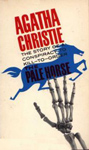
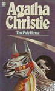
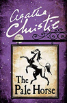
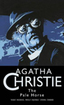
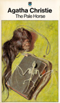
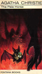
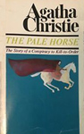

Screen Versions
An adaptation was made for the fifth series of ITV's Agatha Christie's Marple starring Julia McKenzie in 2010. As the character of Miss Marple was inserted and made the chief sleuth of the plot, several changes were made for the adaptation: the characters of Ariadne Oliver, Pamela "Poppy" Stirling, Colonel and Rhoda Despard, Jim Corrigan and Rev. and Mrs Dane Calthrop, are omitted from the adaptation. In addition, new characters were invented: Captain Cottam - a local in Much Deeping; Kanga Cottam - Wife of the Captain, staying with him at The Pale Horse and Lydia Harsnet - Housekeeper of the Cottams, who secretly is having an affair with the husband.
A second adaptation - scripted by Sarah Phelps - was made in 2020 (without Miss Marple) As with previous Phelps adaptations, there was some criticism from fans over changes from the original novel. In addition, there was criticism levelled at the ending, which some found confusing. A Radio Times feature admitted that "the ending is deliberately ambiguous".

Bill Paterson
-